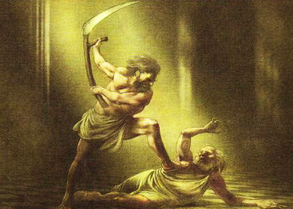

Greek Mythology
(as told by Lia)

Intro: In Greek Mythology, there are many gods and many myths, often with multiple versions. I’ll just be sharing my favorite versions of each myth. For more information, click here
The Beginning: First, there was only Chaos. Then out of the chaos rose Gaea, the earth. Gaea then created the sky, Ouranus, the sea, Pontos, and the pit, Tartarus. Gaea had many children with Ouranos, like the three cyclopses, the hekatonkheires (the hundred-handed ones), and the twelve titans. Ouranus threw the cyclopses and the hundred-handed ones into Tartarus, the deepest pit of the earth. Gaea loved all her children, and planned to get rid of Ouranos.
Kronos: Gaea made a sickle out of adamantine and told the titans to take it and overthrow their father. The only one willing to take it was Kronos, the youngest. Four of his brothers held Ouranus down and Kronos cut him into pieces. As this happened, Ouranus told Kronos that his children would rise against him, just as Kronos was doing.
Kronos became ruler of the titans and married the titan Rhea. Their first child was Hestia, a goddess, not a titan. Kronos remembered Ouranus’s prophecy and swallowed Hestia whole. He did this again with his next four children, Demeter, Hera, Hades, and Posiedon. Rhea hated this and replaced her sixth child, Zeus, with a stone wrapped in blankets, hiding away the real baby.
After he was fully grown, Zeus went to Kronos’s palace and became his cupbearer. He tricked Kronos into drinking a concoction that caused him to vomit Zeus’s brothers and sisters up. Then the Olympians freed the cyclopses and the hundred handed-ones, got new weapons, and fought a war against the titans that lasted for ten years, eventually defeating Kronos, just like Ouranus foretold.